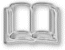

Этиология аллергических заболеваний.
Причина аллергии состоит в аномальном взаимодействии иммунной системы с антигеном. При этом имеет значение и вид антигена, и путь внедрения, срок его персистирования в АПК, и его доза при первом и повторном контакте, а также и общее состояние иммунной системы, но прежде всего - индивидуальная реакция на конкретный антиген. Аллергия как явление, в большинстве случаев, складывается из усиленного и плохо отрегулированного иммунного ответа и последующего усиленного и плохо отрегулированного воспаления. Антиген-провокатор является только запускающей причиной, и процесс невозможен без генетически детерминированных особенностей реакции организма на данный антиген, делающих у конкретного индивида реакцию избыточной и плохо отрегулированной.
Существует множество классификаций аллергенов, большинство из них серьезно устарело. Мы приводим здесь оригинальную классификацию
Таблица 5
Классификация
аллергенов
Аллергены
экзогенные |
Аллергены эндогенные |
|
Гетероаллергены |
Аутоаллергены |
|
Вдыхаемые |
1.
Неинфекционные |
|
Контактные (действуют на кожу и слизистые) |
-индуцируемые повреждением |
Нормальные интактные антигены собственных клеток и их продуктов. В норме вызывают аутотолерантность. |
Пищевые |
- атипические (опухолевые, эмбриональные, антиген стареющих клеток) |
|
Инъекционные |
2.
Инфекционные |
|
Инфекционные |
-вирус-индуцированные |
|
Лекарственные |
-индуцированные микроорганизмами |
|
|
|
|
 |
|